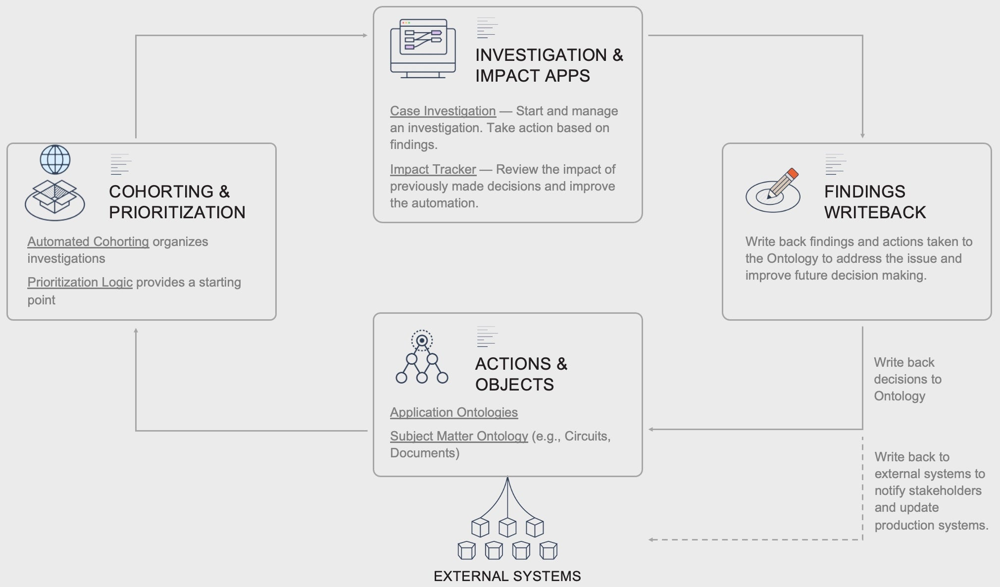

Organizations typically have significant revenue or cost saving opportunities available if they have the tools to look for them, for example, when identifying risks in a power grid, investigating potential fraud, identifying opportunities to improve material yields, or finding the next best sales action. Investigation and Cohorting workflows allow users to create a common operating picture of their organization, combine subject-matter expertise and data analysis to reveal opportunities, and implement real-world solutions.

Investigation and Cohorting workflows are designed to understand and group real-world anomalies or problems in your data that represent revenue or savings opportunities, facilitate drilldowns into the issues, and facilitate remediation. They are used to proactively identify issues or understand relations, following an exploratory approach, in which cohorting logic guides subject-matter expertise from analysts and is used to uncover the anomalies. With the ever-increasing amount of data, the lack of technical skills to handle complex statistical applications often presents an entry barrier for analysts or forces an organization to drastically reduce the complexity of their data.
These workflows nearly always require a toolset that allows for fast analysis and exploration of large, often isolated, data assets. Results would then need to be stored and reused and typically also need to be reproducible.
In Foundry, these workflows combine different tools for users with different skillsets, but all rely on the same data asset, the Ontology, which models the relevant organizational objects and relations between them. Automated business logic and / or ML Cohorting is applied to provide a starting point for investigations and Foundryâs various analysis tools are used to drill down into the issues. Finally, Ontology writeback is used to update the Ontology and external source systems to remediate or action the issue.
Exploratory Analysis
To investigate your data and test hypothesis, analysts often rely on exploratory analysis. They would start with a top-down approach, taking a high-level look at large datasets, and from there trimming it down by transforming, filtering, or aggregating it to test their hypothesis. For example, in the Material Yield Application, analysts review the worst-performing materials weekly and drill down via Contour to identify savings opportunities.
In the past, this method was reserved for highly technical analysts who have the skills to use the tools which can handle large datasets and compare results, which often meant that the process was bottlenecked on a few users and iteration speed was slow.
In Foundry, users rely on a set of code and no-code tools to analyze any dataset, regardless of its size, in seconds. Not only does it provide a set of tools to visually explore data, thus decreasing the entry barrier, but by leveraging the Ontology, it also provides a lot of operational context to the user.
Related products:
Case Investigation
Investigations might start as a result from the Alerting Workflow Pattern (e.g. trends or outages in a power grid), a prioritized cohort (e.g. manufacturing processes with the lowest performing yields), or the user looking for an opportunity (e.g. salespeople identifying their next action).
They either start from a single Object or a small subset of Objects. Investigations are rarely open ended; instead, they most often have a defined goal (e.g. understanding why the source of a customer complaint) and it is the analystsâ task to backtrack the events from the trigger to its root cause.
Related products:
Impact Tracker
Once investigations are finished, a hypothesis has been confirmed, or the analysis has been concluded, an operational decision is taken which triggers a real-world event (e.g. triggering a team to remediate a risky asset).
Ideally, these real-world events would also reduce the risk of running into the same situation again. If this happens, the decision and action taken become important data assets themselves. Knowing when, where, and why decisions were taken, can in turn be leveraged in future investigations and analysis, allowing analysts to compare different situations over time to increase consistency.
Related products:
Manual Rule Creation
Ideally, investigations are triggered proactively. Subject-matter experts may be able to estimate which errors or anomalies might occur at some point and want to monitor the data specifically for these. The thesis can be very specific (in which case they turn to the Alerting Pattern, as in the Asset Failure Operations) use case or loosely (in which case they define KPIs or business logic to look out for in the data, as in the Material Yield Application). At its simplest, the logic follows the steps an analyst would otherwise do manually at the beginning of each investigation or analysis.
Having a (at least partially) automated approach can also be used to ensure deterministic behavior, which might be required by regulators or be valuable to ensure consistency and reduce the chance of risk.
Just as in the Alerting Pattern, users can rely on Foundryâs Alert Automation, or use the same tools as in the Investigation and Exploration.
Related products:
In some cases, investigations or detecting anomalies in data does not require subject-matter expertise to be applied on a case-by-case basis. When a robust and consistent data asset exists, statistical approaches might be better suited to the problem at hand. For humans, it can be hard to detect complex patterns within large amounts of data, especially when the patterns are constantly changing. With Foundry ML, models can be trained and implemented on top of large datasets. The results (whether clusters or predictions) can then be used just as any other datapoint in the platform, meaning that it can be made part of the ontology and picked up in exploratory analysis or investigations.
Related products:
The Ontology stores information on how different assets are related to one another (e.g. how shipments, customers, and orders are connected), so that the users ask and answer their questions naturally.
Objects:
Related products:
Regardless of the Pattern used, the underlying data foundation is constructed from pipelines and syncs to external source systems.
Data Integration Pipelines
Data integration pipelines, written in a variety of languages including SQL, Python, and Java, are used to integrate datasources into the subject matter ontology.
Foundry can sync data from a wide array of sources, including FTP, JDBC, REST API, and S3. Syncing data from a variety of sources and compiling the most complete source of truth possible is key to enabling the highest value decisions.
Want more information on this use case pattern? Looking to implement something similar? Get started with Palantir. â